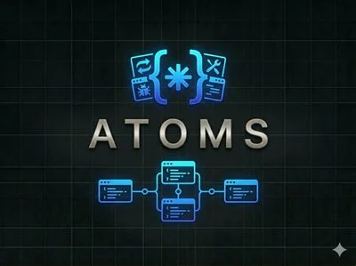
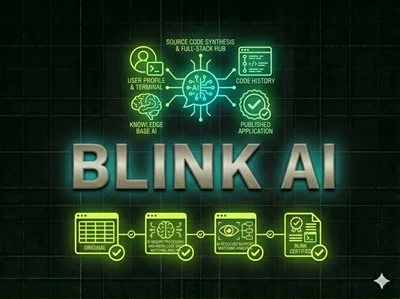

Najbolji AI Alati za Kodiranje i Razvoj 2026 – Gradite Brže s AI
AI alati za kodiranje transformiraju razvoj softvera u 2026. Jeste li iskusni developer koji želi ubrzati rad, ili potpuni početnik koji želi izgraditi aplikaciju bez ijedne linije koda — ovi su vam alati idealni. Od AI asistenata za kodiranje do no-code buildera i web kreatora, sve je recenzirano i testirano od strane WebAlati tima.
Neki linkovi na ovoj stranici su affiliate linkovi. Možemo zaraditi proviziju bez dodatnih troškova za vas. Pravila →

Atoms
FreemiumAI razvojni suputnik koji se integrira u vaš IDE i pruža generiranje koda, pomoć pri debagu i inteligentne prijedloge za refaktoriranje. Ubrzajte razvoj i poboljšajte kvalitetu koda.
Isprobaj Atoms →
Blink
FreemiumNo-code platforma koja pretvara tekstualne opise u potpuno funkcionalne web aplikacije. Samo opišite što trebate i Blink to izgradi — bez ikakvog kodiranja.
Isprobaj Blink →
Dora
FreemiumModerni no-code kreator web stranica s animacijama i vizualno bogatim dizajnima. Kreirajte profesionalne, animirane stranice bez znanja kodiranja — idealno za dizajnere i freelancere.
Isprobaj Dora →Coddy
FreemiumInteraktivna platforma za edukaciju o kodiranju koja uči programiranje kroz AI-vođene izazove i povratne informacije u stvarnom vremenu. Prilagođava puteve učenja vašem napretku.
Isprobaj Coddy →
DeepSite
FreemiumAI kreator web stranica koji generira potpune stranice iz tekstualnih opisa. Nije potrebno kodiranje — opišite ideju za stranicu i DeepSite je generira i objavljuje za minute.
Isprobaj DeepSite →Često Postavljana Pitanja – AI Alati za Kodiranje
Koji je najbolji AI asistent za kodiranje u 2026.?
Atoms je visoko ocijenjeni AI asistent za kodiranje koji se integrira u vaše razvojno okruženje i pruža inteligentno generiranje koda, debug i refaktoriranje. Dizajniran je za ubrzavanje profesionalnog razvoja softvera.
Mogu li izgraditi aplikaciju bez kodiranja koristeći AI?
Da — Blink i DeepSite su no-code AI alati koji vam omogućuju izgradnju potpuno funkcionalnih aplikacija i web stranica jednostavnim opisivanjem što trebate. Blink je specijaliziran za web aplikacije, a DeepSite za web stranice.
Koji je alat za učenje programiranja s AI podrškom?
Coddy je najbolja AI platforma za učenje programiranja. Uči više programskih jezika kroz interaktivne izazove s AI povratnim informacijama u stvarnom vremenu, prilagođavajući put učenja vašoj razini.
Koja je razlika između AI asistenata za kodiranje i no-code AI graditelja?
AI asistenti za kodiranje (poput Atoms) rade unutar vašeg razvojnog okruženja i pomažu profesionalnim programerima pisati, debugirati i refaktorirati kod brže. No-code AI graditelji (poput Blink i DeepSite) omogućuju ne-programerima kreiranje aplikacija i web stranica opisivanjem što trebaju na svakodnevnom jeziku. Asistenti za kodiranje zahtijevaju poznavanje programiranja; no-code graditelji ne.
Može li AI automatski izgraditi potpunu web stranicu ili aplikaciju?
Da — DeepSite i Blink mogu generirati potpune, funkcionalne web stranice i web aplikacije iz tekstualnog opisa. DeepSite je specijaliziran za statičke web stranice s čistim HTML/CSS izlazom. Blink pokriva kompleksnije web aplikacije s interakcijama podataka. Za produkcijsku kvalitetu, AI generiran kod obično zahtijeva pregled i doradu od strane programera.
Neki linkovi na ovoj stranici su affiliate linkovi. Možemo zaraditi proviziju bez dodatnih troškova za vas. Pravila →